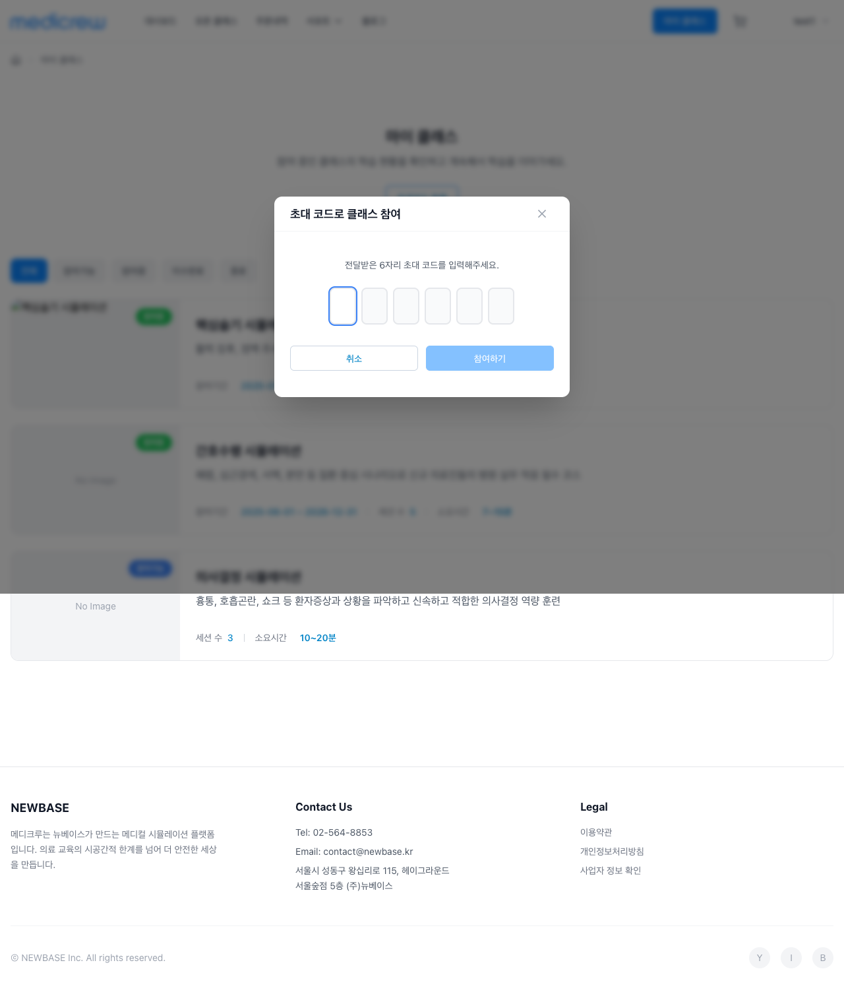
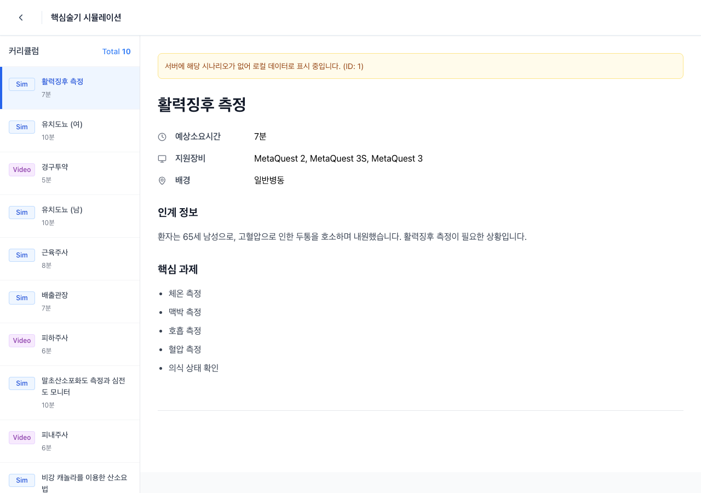
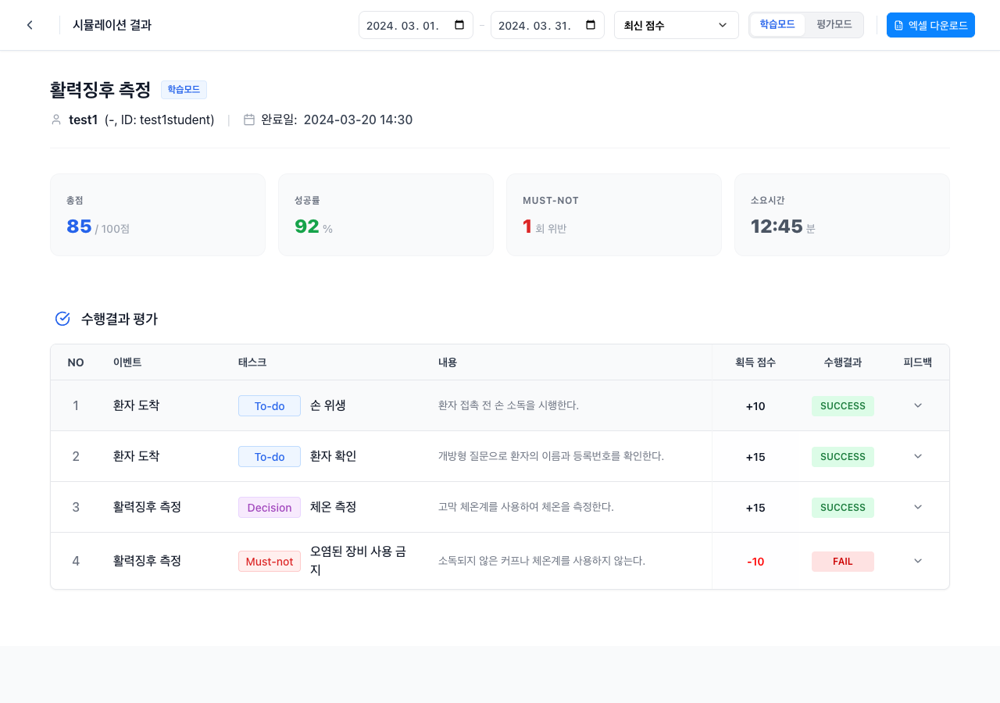

목록: GET /open-class/list 또는 프로덕트/클래스 통합 목록 API. 응답: classId, title, thumbnailUrl, organizationName, price, discountPrice, participationPeriod, scenarioCount 등.
쿼리: page, pageSize, search, sort 등 (구현에 따라).
4. 비즈니스 규칙
판매 중(isForSale/활성)인 오픈클래스만 노출.
이미 수강 등록된 클래스는 “참여중” 등으로 표시하고, 수강신청 대신 “마이클래스로 이동” 등으로 유도할 수 있음.
5. 통계
화면에 통계 카드가 있으면 목록 건수, 가격대 등 필요 시 별도 집계 API 또는 목록 메타로 제공.
이름, 이메일, 프로필 이미지, 휴대폰, 소속기관, 직책, 직무, 역할·라이선스 배지, 언어 설정
3. API 명세
프로필 조회: GET /user/profile — 현재 로그인 사용자의 프로필(이름, 이메일, 프로필 이미지 URL, 전화, 소속기관, 직책, 직무 등).
프로필 수정: PATCH /user/profile — 이름, 프로필 이미지, 전화, 소속기관, 직책, 직무 등 수정. 이미지는 multipart 또는 URL 업로드 방식에 따라 정의.
언어 설정: 사용자별 언어 저장·조회 (예: 프로필에 포함 또는 GET/PUT /user/preferences).
이메일 인증·변경·비밀번호 재설정·계정 삭제는 각각 전용 API/플로우 사용.
4. 비즈니스 규칙
본인 프로필만 조회·수정 가능(토큰 기준).
이메일 변경·비밀번호 재설정·계정 삭제는 보안 절차(이메일 인증, 확인 단계) 적용.
5. 통계
해당 화면 전용 통계 없음. 표시용으로 역할·라이선스 정보만 노출.
6. 연관 API · 플로우
1 설정 진입 → 프로필 조회 API(GET /user/profile) 또는 AuthContext 사용자 정보
2 프로필 수정 저장 → PATCH /user/profile → 성공 시 화면·세션 반영
3 이메일 인증/변경/비밀번호 재설정/계정 삭제 → 해당 전용 페이지·API 플로우
Student|초대코드 등록
1. 스크린샷
초대코드 등록 모달
2. 화면 요약
마이클래스 목록 등에서 “초대코드 등록”을 누르면 뜨는 모달. 6자리 초대코드를 입력하고 등록하면, 해당 클래스에 수강 등록되고 마이클래스 상세로 이동한다.
진입
마이클래스 목록 → 초대코드 등록 버튼
사용자 행동
6자리 코드 입력(한 칸에 1자, 대문자/숫자), 붙여넣기, 등록, 닫기
표시 데이터
코드 입력 필드 6개. (테이블/목록 없음)
3. API 명세
초대 수락: POST /invite/accept 또는 POST /class/invite/accept — 요청 본문에 초대코드(6자리). 응답: classId, 클래스 정보 등.
성공 시 해당 클래스에 대한 수강 등록(enrollment) 생성 → 내 수강 클래스 목록 API에 반영.
현재 classInviteService는 Mock. 백엔드에 초대 코드 검증·수락 API 구현 필요.
4. 비즈니스 규칙
코드 형식: 6자리(대문자·숫자). 유효하지 않거나 만료·사용 완료 시 에러 메시지.
이미 수강 중인 클래스 코드를 다시 입력한 경우: 이미 참여 중임을 안내하거나, 동일 등록으로 처리.
5. 통계
해당 화면 전용 통계 없음.
6. 연관 API · 플로우
1 마이클래스 목록 → 초대코드 등록 클릭 → 모달 오픈
2 코드 입력 후 등록 → 초대 수락 API 호출 → 성공 시 수강 등록 생성, 마이클래스 상세로 이동
Student|세션 참여 · 결과보기
1. 스크린샷
세션 참여결과보기
2. 화면 요약
세션 참여: 마이클래스 상세에서 선택한 커리큘럼(시나리오/동영상)을 실행하는 화면. 시뮬레이션을 진행하고 완료 후 결과보기로 넘어간다.
결과보기: 시뮬레이션 결과(점수, 소요시간, 정답/오답 요약 등)를 보고, 재도전하거나 마이클래스 상세로 돌아간다.
경로
세션: /class/:classId/curriculum/:itemId 등 / 결과: /class/:classId/results/:itemId 등
사용자 행동
시뮬레이션 실행, 이전/다음, 완료 → 결과보기, 재도전, 마이클래스 상세로 돌아가기
표시 데이터
결과: 점수, 소요시간, Care Score, Duration, 정답/오답 요약 등
3. API 명세
시나리오 실행: 시뮬레이션 엔진/재생에 필요한 리소스·세션 API (기존 시나리오·클래스 API 연동).
결과 저장·조회: 시뮬레이션 완료 시 결과 저장(POST /simulation/result 등), 결과보기에서 조회(GET /simulation/result/{id} 등).
결과가 이수율·이수 완료 판단에 사용됨 → 마이클래스 상세 진행률 API와 연동.
4. 비즈니스 규칙
수강기간 내·수강 등록된 클래스의 시나리오만 실행 가능.
결과 저장 시 사용자·클래스·시나리오·점수·소요시간 기록. 이수 조건(최소 점수, 최소 완료 수)과 비교해 이수율·이수 완료 갱신.
5. 통계
결과 화면: 점수, 소요시간, Care Score, Duration 등 시뮬레이션 결과 데이터. 대시보드 통계(시뮬레이션 수, 시간, Perfect 획득 등)의 입력 데이터가 됨.
6. 연관 API · 플로우
1 마이클래스 상세 → 세션 참여 클릭 → 세션/시나리오 API로 진입
2 시뮬레이션 완료 → 결과 저장 API → 결과보기 화면(결과 조회 API)
3 결과보기에서 재도전 시 다시 세션 참여. “돌아가기” 시 마이클래스 상세(진행률 갱신 반영)
Student|워크플로우
수강 신청
flowchart TB
A[오픈클래스 목록] --> B[카드 클릭]
B --> C[오픈클래스 상세]
C --> D[수강신청 또는 장바구니 담기]
D --> E[장바구니]
E --> F[주문하기]
F --> G[주문확인]
G --> H[결제/주문 완료]
H --> I[마이클래스 반영]
초대코드로 참여
flowchart TB
A[마이클래스 목록] --> B[초대코드 등록 버튼]
B --> C[모달 오픈]
C --> D[6자리 코드 입력]
D --> E[등록]
E --> F[초대 수락 API]
F --> G[마이클래스 상세]
학습 진행
flowchart TB
A[마이클래스 상세] --> B[세션 시작]
B --> C[커리큘럼 항목 선택]
C --> D[세션 참여 시뮬레이션]
D --> E[완료]
E --> F[결과보기]
F --> G[재도전 또는 마이클래스 상세 복귀]